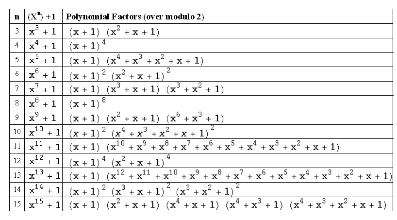

Here is how to use the above table:
Pick a value n, which will be the codeword length.
Choose a generator polynomial G(x) from the list of factored polynomials within that particular n. You can choose the generator polynomial to be either one of the factored polynomials or a product of two or more factored polynomials.
The number of data bits k that you can try now will be k = n – deg(G(x)), where deg(G(x)) is the degree of G(x).
Notes:
The above table was prepared using an online tool at www.quickmath.com. Listed below are the steps you need to follow for factoring a polynomial over modulo-2 using this tool:
After displaying the web site main page, choose “Factor” under “Algebra” submenu on left-side column.
Once you are at the "Factor" page, make sure you choose "Advanced" mode.
In the advanced Factor mode, enter “2” in the “modulo” input field to make the factoring over modulo-2.
Press the Factor button to get the results.
You can also use Mathematica software to get the same results by applying the Factor function as follows:
Factor[poly, Modulus->p] , where poly is the polynomial to be factored and p is the modulo value.